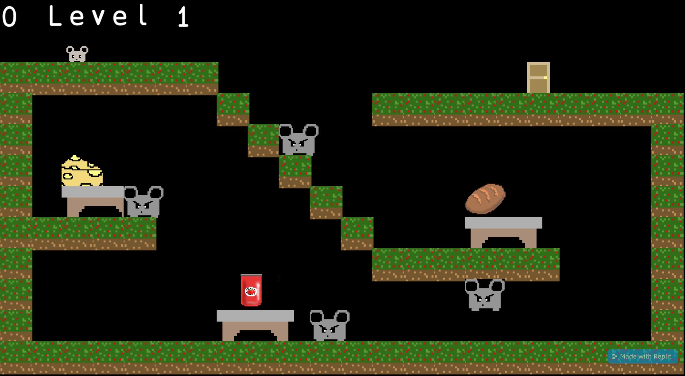

Adventure Game (SEP 11 Freedom Project)
The "Freedom Project" for SEP11 is all about Javascript, where we can make anything functional, like a game,
making the search button work in the website, and many more. The purpose of this blog is combining what we learn about
Javascript and our new tool that we learned on our own, kaboomjs to make a game that is relaxing and helps entertain others. For my project,
I created a adventure game using Javascript and Kaboomjs, where the mouse needs to collect all the food in order to go to the next level. This blog will
walk through my process of independently studying kaboomjs in order to make a adventure game.
Next Steps
This year, I really enjoy making a adventure game using Kaboomjs and Javascript and learning about DOM, Javascript, and P5js. My next step is creating a app for my adventure game.

Takeaways
- Collobration
- Watching tutorials
- Using console.log() to help us when debugging and finding errors
Challenges
- One challenge me and my partner faced when creating our adventure game is making the sprite jump. In the beginning, we noticed that the sprite was floating
in the sky when the sprite jump. In addition, we decided to change the gravity, so that the sprite would not be floating in the sky because there is
more weight on the sprite.
- Another challenge me and my partner faced when creating our adventure game is syntax errors. In Javascript, we use semicolon(;) at the end of each code, but
in Kaboomjs, we use comma (,) at the end of each code. In addition, console.log() had helped us find the errors when we were debugging.
Link to my blog
Link to my Adventure Game
Link to the code
Link to my notes